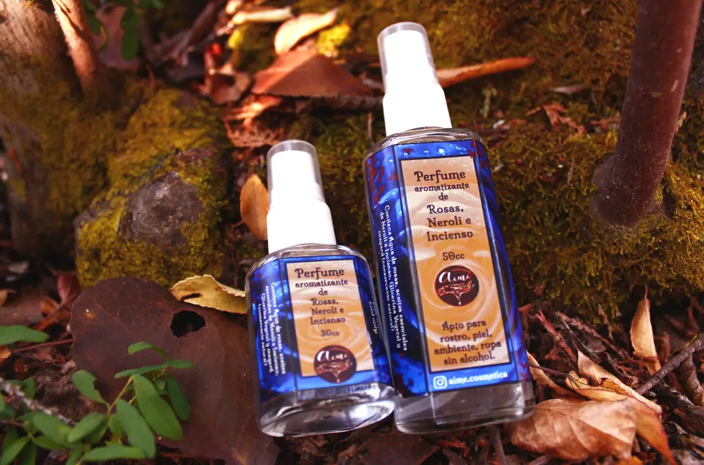
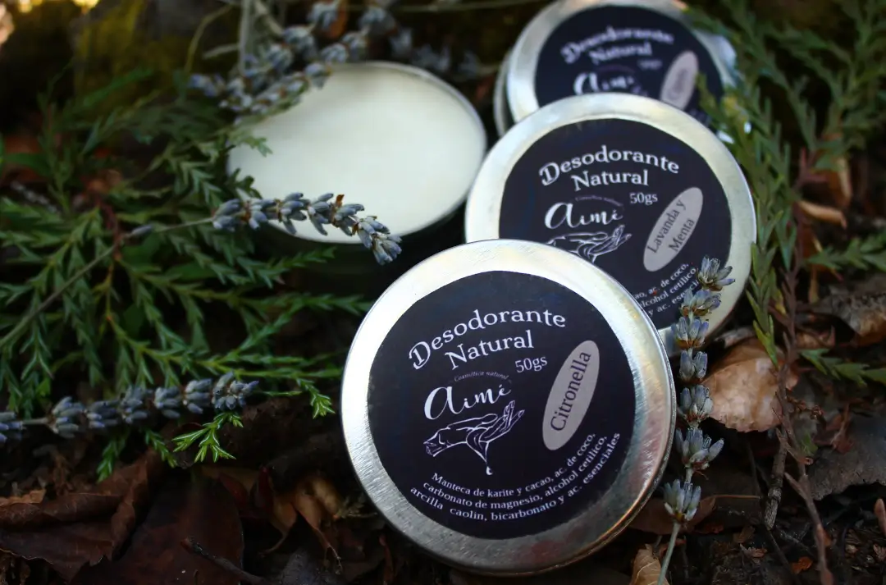

Los usos potencialmente beneficiosos pueden verse
en muchas enfermedades, debido a que casi todos los
órganos y sistemas tienen sitios para que pueda ejercer su
efecto por la acción de los principios activos de la planta
(cannabinoides).
Pomada de Cannabis
Analgésica, desinflamante, suavizante, hidratante,
antiséptica, astringente, entre otras. Alivia dolores
musculares, de articulaciones y tendones, inclusive
calambres.
Ingredientes
aceite de cannabis, oliva, coco y almendras, cera de abeja
y aceites esenciales de lavanda y enebro.
Pomada de Caléndula
Cicatrizante, antiséptica, regeneradora de la piel, buena
para quemaduras y acné, para hidratar y suavizar la piel.
Ingredientes
Cera de abeja, aceite de caléndula, coco y almendras
aceite esencial de naranja.
Aceite de Rosa Mosqueta
Regenerador de piel, hidratante, favorece a la eliminación
de cicatrices, estrías, manchas y arrugas.
Ingredientes
Aceite Puro y Organico, extraído con prensado en frío.
Aceite Intimo
Efectos afrodisíacos y lubricantes. Suavizante e
hidratante mejorando los momentos de placer.
Ingredientes
Aceites de Jojoba y Almendras y Aceite esencial de Ylang Ylang.
Balsamo Labial
Proteje, hidrata y regenera el labio en caso de rajaduras.
Ingredientes
Manteca de cacao, cera de abeja, aceite de coco,
caléndula y rosa mosqueta, propóleo y aceites esenciales
de menta o eucalipto.
Elixir Perfume
Uso tópico. suavizante e hidratante para la piel, se puede
utilizar para la punta del cabello ya que la Almendras
promueve su crecimiento, repara el cabello seco y
maltratado y reduce las dobles puntas
Ingredientes
Aceite de almendras, aceites esenciales de Salvia,
Eucalipto, Lavanda y Ciprés. Su aroma. efectos
relajante mental, ayudan a la conexión con lo espiritual y
elevan el ánimo y la voluntad.

Aromatizante en Spray “Rosalí”
Se puede aplicar tanto en el rostro y en el cuerpo como en
la ropa, y ambientes. No contiene alcohol.
Ingredientes
Agua de rosas, glicerina vegetal, cosgard, y aceites
esenciales de neroli e incienso.

Desodorante Natural
Este Desodorante no es antitranspirante, sino que permite
que el ciclo de la piel se acompañe en forma más
perfumada, suave, hidratada y regulada, de una manera
puramente natural.
Ingredientes
Manteca de karité, aceites de coco, almendras y ricino,
alcohol cetílico, carbonato de magnesio, arcilla caolín,
bicarbonato de sodio y aceites esenciales.
Shampoo Sólido
seco y débil
Romero, Ortiga y Tomillo.
Cabello Mixto
Eucalipto, Lavanda y Menta.
Cabello Graso
Cipress, ortiga y Carbón activado.
Piel Atopica o sensible
Manzanilla, Curcuma y Tea tree.